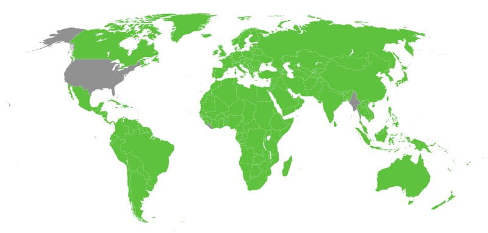
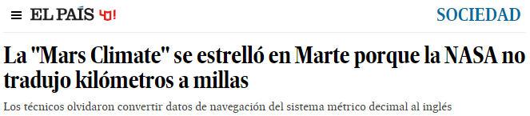

Sistema internacional de unidades.
Hasta finales del s. XVIII, los sistemas de medida utilizados por el hombre en sus relaciones científicas y comerciales tenían dos inconvenientes principales:
- Cada país y, a veces, cada región, tenía su propio sistema de unidades.
- Los múltiplos y submúltiplos no utilizaban el número 10 como base.
Para evitar esto, el gobierno francés por medio de un decreto, sentó los principios para la implantación de un sistema de medidas basado en el número 10, llamado Sistema Métrico Decimal, que progresivamente fue adoptado por la mayoría de los países y que posteriormente se llamaría Sistema Internacional de Unidades (SI).
En el siguiente mapa tenemos en verde los países que en su legislación recogen como sistema de medida el sistema internacional:
 |
En el resto de países (Estados Unidos, Birmania...) se usa el sistema británico de unidades; aunque en casi todo el mundo se está remplazando por el SI.
Unidades básicas del SI.
El SI consta de siete unidades básicas que proporcionan la referencia utilizada para definir el resto de unidades de medida del Sistema Internacional, llamadas unidades derivadas.
Este SI consiste en un conjunto de unidades de base , prefijos y unidades derivadas.
Las siete unidades básicas son:
Como estamos en un Nivel I de un ámbito científico-tecnológico, nos centraremos en tres de las unidades básicas que son longitud, masa y tiempo, y partir de ellas trabajaremos con otras unidades derivadas.
Múltiplos y submúltiplos decimales de las unidades del SI.
Se ha adoptado un conjunto de prefijos para su uso junto con las unidades SI, con el fin de expresar los valores de las magnitudes que son mucho más grandes o mucho más pequeñas que la unidad SI sin prefijo. Estos prefijos SI se incluyen en la siguiente tabla, pueden utilizarse con cualquiera de las unidades básicas y con cualquiera de las unidades derivadas con nombres especiales.
Así podemos hablar de centilitros, kilómetros...
Unidades derivadas.
Las unidades derivadas se forman a partir de productos de potencias de unidades básicas. Por ejemplo, cuando viajamos en coche y circulamos a 120 km/hora, estamos hablando de una magnitud derivada llamada velocidad, ya que sus unidades se forman a partir de las unidades fundamentales de la longitud y del tiempo.
El número de magnitudes utilizadas en el campo científico no tiene límite; por tanto, no es posible establecer una lista completa de magnitudes y unidades derivadas. Sin embargo, más adelante estudiaremos algunas de ellas.
Unidades fuera del SI.
No obstante, algunas unidades no pertenecientes al SI son todavía ampliamente utilizadas. Unas pocas, como el minuto, la hora y el día, unidades de tiempo, serán siempre utilizadas porque están fuertemente enraizadas en nuestra cultura.
También existen unidades más utilizadas en distintas ciencias, como por ejemplo el año luz en astronomía.
Completa.
Completa la siguiente tabla con el nombre de la magnitud y si se trata de una unidad derivada, básica o múltiplo o submúltiplo de una básica.
<br>
El 11 de diciembre de 1998, la NASA envió a Marte una sonda para estudiar el clima del planeta. Recorrió 600 millones de kilómetros en nueve meses sin problema, pero cuando llegó al planeta rojo, se estrelló. ¿Qué fue lo que pasó? El siguiente titular de aquel día de EL PAÍS, nos lo resume:

Por cierto, este error provocó pérdidas por 125 millones de dólares.
<br>
¿Quién decide cuánto es una unidad de medida básica?
El Comité Internacional de Pesos y Medidas (abreviado CIPM del francés Comité International des Poids et Mesures) es un organismo creado por la Convención del Metro, en París, en 1875. Su función es asegurar la uniformidad mundial de las unidades de medida, sea por acción directa o presentando propuestas en la Conferencia General de Pesos y Medidas (CGPM). Está conformado por 18 personas de distintos países, seleccionadas de los estados miembros de la Convención del Metro.